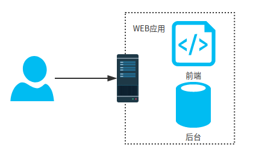
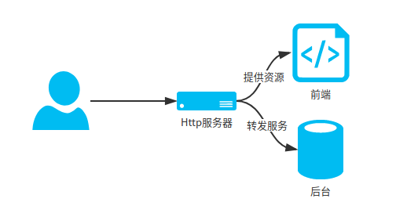
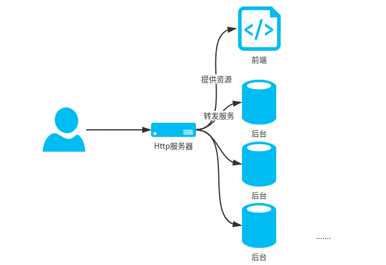
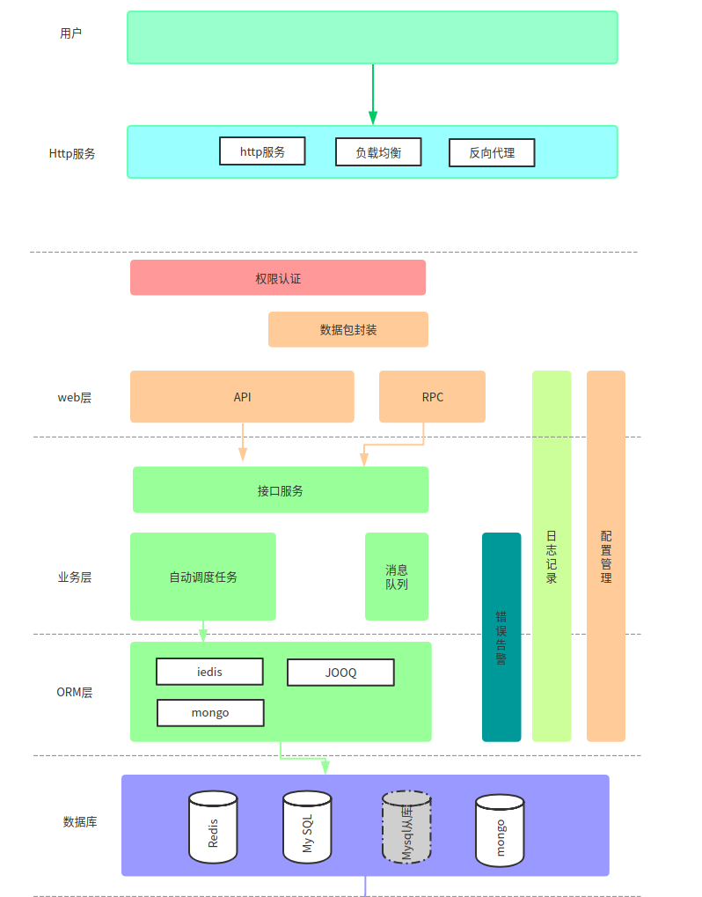
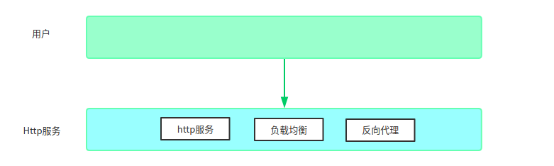
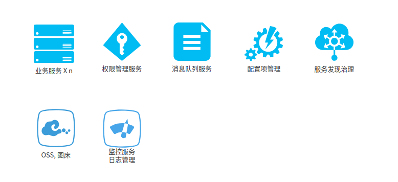
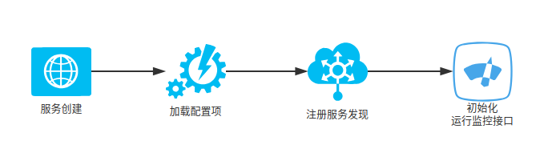
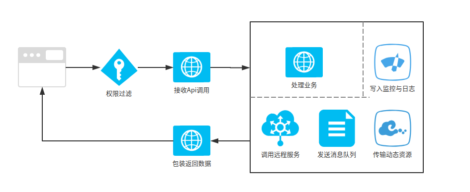

<!DOCTYPE html>
<html lang class="loading">
<head><meta name="generator" content="Hexo 3.8.0">
    <meta charset="UTF-8">
    <meta http-equiv="X-UA-Compatible" content="IE=edge,chrome=1">
    <meta name="viewport" content="width=device-width, minimum-scale=1.0, maximum-scale=1.0, user-scalable=no">
    <title>高可用java分布式系统架构从零开始-一-系统总览 - Linco</title>
    <meta name="apple-mobile-web-app-capable" content="yes">
    <meta name="apple-mobile-web-app-status-bar-style" content="black-translucent">
    <meta name="google" content="notranslate">
    <meta name="keywords" content="Linco, Blog,"> 
    <meta name="description" content="高可用java分布式系统架构从零开始(一)​    
按以往几家规模化互联网公司的系统和应用架构为蓝图, 搭建一套面向企业应用的分布式架构, 记录下过程共同学习. 
第一篇的先做架构总览, 具体实现,"> 
    <meta name="author" content="Linco"> 
    <link rel="alternative" href="atom.xml" title="Linco" type="application/atom+xml"> 
    <link rel="icon" href="/img/icon.png"> 
    <link rel="stylesheet" href="//cdn.jsdelivr.net/npm/gitalk@1/dist/gitalk.css">
    <link rel="stylesheet" href="/css/diaspora.css">

</head>
</html>
<body class="loading">
    <span id="config-title" style="display:none">Linco</span>
    <div id="loader"></div>
    <div id="single">
    <div id="top" style="display: block;">
    <div class="bar" style="width: 0;"></div>
    <a class="icon-home image-icon" href="javascript:;" data-url></a>
    <div title="播放/暂停" class="icon-play"></div>
    <h3 class="subtitle">高可用java分布式系统架构从零开始-一-系统总览</h3>
    <div class="social">
        <!--<div class="like-icon">-->
            <!--<a href="javascript:;" class="likeThis active"><span class="icon-like"></span><span class="count">76</span></a>-->
        <!--</div>-->
        <div>
            <div class="share">
                <a title="获取二维码" class="icon-scan" href="javascript:;"></a>
            </div>
            <div id="qr"></div>
        </div>
    </div>
    <div class="scrollbar"></div>
</div>

    <div class="section">
        <div class="article">
    <div class="main">
        <h1 class="title">高可用java分布式系统架构从零开始-一-系统总览</h1>
        <div class="stuff">
            <span>六月 02, 2019</span>
            
  <ul class="post-tags-list"><li class="post-tags-list-item"><a class="post-tags-list-link" href="/tags/java/">java</a></li></ul>


        </div>
        <div class="content markdown">
            <h3 id="高可用java分布式系统架构从零开始-一"><a href="#高可用java分布式系统架构从零开始-一" class="headerlink" title="高可用java分布式系统架构从零开始(一)"></a>高可用java分布式系统架构从零开始(一)</h3><p>​    </p>
<p>按以往几家规模化互联网公司的系统和应用架构为蓝图, 搭建一套面向企业应用的分布式架构, 记录下过程共同学习. </p>
<p>第一篇的先做架构总览, 具体实现放后面. </p>
<p>​    </p>
<p>早期的 web 应用, 前端和后台接口放在同一个项目包, 装载进一个web容器单机运行</p>
<p></p>
<p>​    </p>
<p>后来, 前端技术越发成熟, 开始自立门户, 前端资源也不再需要寄放在web容器上, 性能更优的Http服务程序和OSS服务, CDN成为理想的选择, 于是系统变成了这样</p>
<p></p>
<p>​    </p>
<p>可以想到, web后台不再受单机单应用的限制, 已经可以根据需要增加服务容器或物理机器, 只需要在Http服务器配置转发信息</p>
<p></p>
<p>​    </p>
<p>于是, 分布式系统开始有了雏形, 但一些单机下应用部署的经验已经无法满足我们的需要. 我们更希望后台服务相互之间能够通讯协作, 或者运行同一应用来保障可用应对业务瓶颈, 同时还能够应对网络环境的不稳定</p>
<p></p>
<p>​    </p>
<p>这些都是分布式系统设计的目标, 先看架构草图 </p>
<p></p>
<p>​    </p>
<p>​    </p>
<p>Http服务选择战斗民族开发的Nginx神器</p>
<p>作为Http服务的第一环节, Nginx 提供了静态资源服务器, 反向代理, 和负载均衡三个重要的功能</p>
<p>​    </p>
<p></p>
<p>​    </p>
<p>​    </p>
<h6 id="静态资源服务"><a href="#静态资源服务" class="headerlink" title="静态资源服务:"></a>静态资源服务:</h6><p>​    Nginx 可以高效处理http请求中的静态资源访问, 静态资源包括前端代码(html, css, js, 框架文件), 素材和其他用户可以直接访问的文件等</p>
<p>​    </p>
<h6 id="反向代理"><a href="#反向代理" class="headerlink" title="反向代理:"></a>反向代理:</h6><p>​    代理服务器接受请求，然后识别请求转发给其他服务， 并将从其他服务上得到的结果返回，此时代理服务器对外就表现为一个服务器。反向代理的意义在于代理服务可以根据请求信息分配不同的服务器, 而过程对前端和用户透明</p>
<p>​    </p>
<h6 id="负载均衡"><a href="#负载均衡" class="headerlink" title="负载均衡:"></a>负载均衡:</h6><p>​    Nginx 的反向代理功能可以把请求分发给对应服务器, 这样我们的系统分成多个模块在不同服务器上运行, 但是有一个模块性能差了点, 并发量一上去就响应不过来. 我们希望加多两台机器来跑这一个模块, 这时候就需要负载均衡的功能. nginx 通过配置多台服务器响应同一请求, 按照负载均衡算法分摊http请求, 减少单个服务节点的计算压力, 从而处理分布式系统web层的单点性能问题</p>
<p>​    </p>
<p><a href="https://lincoxiaoq.github.io/2019/05/18/%E4%BB%8E%E9%9B%B6%E5%BC%80%E5%A7%8B%E6%90%AD%E5%BB%BA%E9%AB%98%E5%8F%AF%E7%94%A8%E7%9A%84java%E5%88%86%E5%B8%83%E5%BC%8F%E7%B3%BB%E7%BB%9F%E6%9E%B6%E6%9E%84-%E4%BA%8C-%E6%89%8B%E6%8A%8A%E6%89%8B%E6%90%AD%E5%BB%BAnginx%E6%9C%8D%E5%8A%A1%E5%99%A8/" target="_blank" rel="noopener">具体Nginx功能和使用看这里</a></p>
<p>​    </p>
<p>​    </p>
<p>请求经过Nginx后, 对于静态资源的访问已经直接处理了, API调用会由nginx分配到对应后台服务</p>
<p>​    </p>
<p>企业级的后台服务应该是怎样的呢?</p>
<p></p>
<p>一个可用性高, 维护成本相对低的分布式后台需要包含上面的七个部分</p>
<p>​    </p>
<p>以业务服务的启动和请求处理为例</p>
<h5 id="服务启动"><a href="#服务启动" class="headerlink" title="服务启动"></a>服务启动</h5><p></p>
<p>​    </p>
<p>服务启动时, 先从配置项管理取得服务配置信息, 这些信息可以是业务配置, 远程配置, 数据库等. 这里的配置项管理使用在 Spring cloud 配套的 Spring cloud config, 并且需要编写一些增强代码</p>
<p>​    </p>
<p>随后, 业务服务向服务治理服务注册自己所能提供的远程服务, 说白了就是把远程过程调用的接口, 参数和唯一的功能标识托管到服务发现, 这样其他服务在需要某项功能时, 向服务发现治理发起请求, 提供功能标识, 服务治理代替完成调用, 调用方不需要知道功能接口在哪, 是否可用, 负载如何, 而调用过程中的错误重试, 降级, 熔断都交给服务治理处置, 不需要在业务系统中重复编程. 这一系列通过Spring Cloud配套的 Eurka, Feign, Hystrix 组合实现</p>
<p>​    </p>
<p>服务启动完成前还需要做的一件事是初始化一个对接远程监控和日志管理的实例, 这样核心异常和重要日志可以交由运行监控服务统一分析, 集中管理分布式日志, 运维通知都可以做到. 凭借业务治理模块提供的功能, 运行监控服务结构可以比较简单地开发出来</p>
<p>​    </p>
<p>​    </p>
<h5 id="处理请求"><a href="#处理请求" class="headerlink" title="处理请求"></a>处理请求</h5><p></p>
<p>大体的流程和单点应用无异, 其中有几个环节值得一提</p>
<p>​    </p>
<p><strong>权限过滤</strong>  权限过滤用Spring Securitry实现, 分布式系统中要求是单点登录的, 权限管理服务也应独立运行</p>
<p>​    </p>
<p><strong>管理资源文件</strong>  为了发挥存储机器的性能, 让业务模块专一处理CPU密集请求, 一般我们会把资源文件存储到另一台资源服务器上, 这台服务器单一作为对象储存服务 (OSS), 业务处理过程如果需要加载或写入文件的话, 都放在 OSS 服务进行, 所以资源传输的过程不再本地IO, 而是面向 OSS 进行</p>
<p>​    </p>
<p><strong>发送消息队列</strong>  消息队列是分布式系统中除远程调用以外另一个重要的通讯方式, 通过成熟的消息队列服务可以做到可靠的异步通信. 可选的消息队列框架很多, 用法都大同小异</p>
<p>​    </p>
<h4 id="其他技术相关"><a href="#其他技术相关" class="headerlink" title="其他技术相关"></a>其他技术相关</h4><p>​    </p>
<p><strong>数据持久化</strong>  数据存储按需选用关系型 (MySQL, Oracle, SQL Server …) 或非关系型数据库 (MongoDB, Hbase …) 后面会讨论关系型数据库一些好的对象设计习惯以及读写分离, 分库分表的相关操作. </p>
<p>​    </p>
<p><strong>业务系统性能</strong> 使用作数据Redis缓存, 用连接池管理ORM</p>
<p>​    </p>
<p><strong>WEB 容器</strong>  Spring Boot 启动, 用 Jetty 或者内置的 Tomcat, Jetty对分布式微服务的场景较有优势</p>
<p>​    </p>
<p><strong>微服务容器</strong>   只有Docker/K8S可选, Java项目由于JVM自身的隔离性, 可以直接跑在物理机器上</p>
<p>​    </p>

            <!--[if lt IE 9]><script>document.createElement('audio');</script><![endif]-->
            <audio id="audio" loop="1" preload="auto" controls="controls" data-autoplay="true">
                <source type="audio/mpeg" src="/music/default_bgm.mp3">
            </audio>
            
        </div>
        
    <div id="gitalk-container" class="comment link" data-ae="false" data-ci="978518cc439cd352dd0b" data-cs="2d89825e7db6df72d065714d6b4ac1ce1829b14e" data-r="LincoXiaoQ.github.io" data-o="LincoXiaoQ" data-a="LincoXiaoQ" data-d="false">查看评论</div>


    </div>
    
</div>


    </div>
</div>
</body>
<script src="//cdn.jsdelivr.net/npm/gitalk@1/dist/gitalk.min.js"></script>
<script src="//lib.baomitu.com/jquery/1.8.3/jquery.min.js"></script>
<script src="/js/plugin.js"></script>
<script src="/js/diaspora.js"></script>
<link rel="stylesheet" href="/photoswipe/photoswipe.css">
<link rel="stylesheet" href="/photoswipe/default-skin/default-skin.css">
<script src="/photoswipe/photoswipe.min.js"></script>
<script src="/photoswipe/photoswipe-ui-default.min.js"></script>

<!-- Root element of PhotoSwipe. Must have class pswp. -->
<div class="pswp" tabindex="-1" role="dialog" aria-hidden="true">
    <!-- Background of PhotoSwipe. 
         It's a separate element as animating opacity is faster than rgba(). -->
    <div class="pswp__bg"></div>
    <!-- Slides wrapper with overflow:hidden. -->
    <div class="pswp__scroll-wrap">
        <!-- Container that holds slides. 
            PhotoSwipe keeps only 3 of them in the DOM to save memory.
            Don't modify these 3 pswp__item elements, data is added later on. -->
        <div class="pswp__container">
            <div class="pswp__item"></div>
            <div class="pswp__item"></div>
            <div class="pswp__item"></div>
        </div>
        <!-- Default (PhotoSwipeUI_Default) interface on top of sliding area. Can be changed. -->
        <div class="pswp__ui pswp__ui--hidden">
            <div class="pswp__top-bar">
                <!--  Controls are self-explanatory. Order can be changed. -->
                <div class="pswp__counter"></div>
                <button class="pswp__button pswp__button--close" title="Close (Esc)"></button>
                <button class="pswp__button pswp__button--share" title="Share"></button>
                <button class="pswp__button pswp__button--fs" title="Toggle fullscreen"></button>
                <button class="pswp__button pswp__button--zoom" title="Zoom in/out"></button>
                <!-- Preloader demo http://codepen.io/dimsemenov/pen/yyBWoR -->
                <!-- element will get class pswp__preloader--active when preloader is running -->
                <div class="pswp__preloader">
                    <div class="pswp__preloader__icn">
                      <div class="pswp__preloader__cut">
                        <div class="pswp__preloader__donut"></div>
                      </div>
                    </div>
                </div>
            </div>
            <div class="pswp__share-modal pswp__share-modal--hidden pswp__single-tap">
                <div class="pswp__share-tooltip"></div> 
            </div>
            <button class="pswp__button pswp__button--arrow--left" title="Previous (arrow left)">
            </button>
            <button class="pswp__button pswp__button--arrow--right" title="Next (arrow right)">
            </button>
            <div class="pswp__caption">
                <div class="pswp__caption__center"></div>
            </div>
        </div>
    </div>
</div>


</html>
